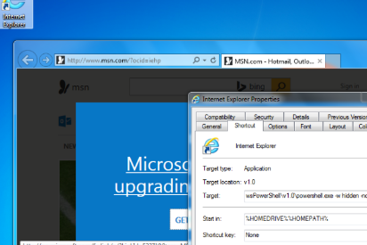

Empire module backdoor_lnk.py
Backdoor a specified .LNK file with a version that launches the original binary and then an Empire stager.
This module takes a full LNKPath to an existing .LNK shortcut as well as a specified RegPath to store the launcher logic. The script will store the base64-encoded launcher in the registry location, preserve the shortcut icon, and then set the launch target to be powershell.exe that launches the original binary and then the Empire stager. The end result is a trojanized shortcut that will spawn a new Empire payload whenever the user clicks on the shortcut.
